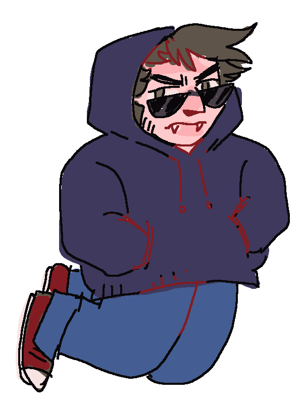
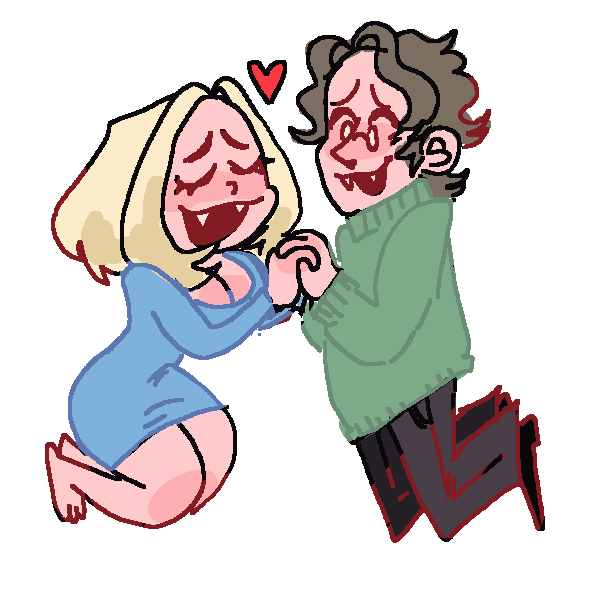
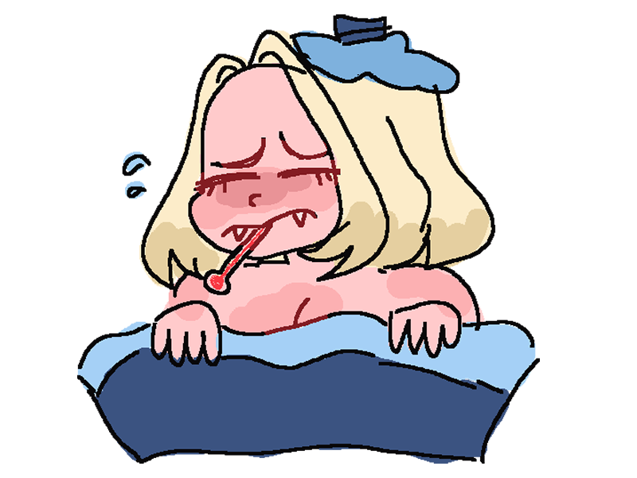
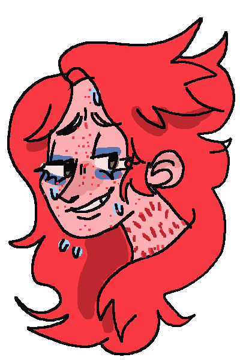

Being turned into a vampire is a several-step process that can go wrong very easily. The first step, of course, is to be bitten. Vampire saliva is the catalyst for the transformation, when it comes into contact with the bacteria on the fangs it inoculates the virus and transfers the viral cells into their host. The second property of the saliva is quite important too, it has the ability to heal over the bite wound left by the feeding, to seal in the virus. It is rare for one to be turned the same night they are bitten, most vampires operate a lot like komodo dragons, dosing their victim with venom over a long period of time before finishing the job and killing them, typically not by draining blood, as the most a vampire can consume at a time alone is 1.5-2 pints, most drain-kills occur when multiple vampires feed on a victim, and these do not result in transformations due to immune complications with venom-mixing.  When the victim dies, there are specific conditions for them to be turned. The first of these conditions is that they must have had the venom of ONE vampire circulating in their veins upon death, if multiple venom strains exist in the body, they will attack one another to oblivion at the beginning of the reanimation process and it won’t continue. When the heart stops, the venom leaves the blood and releases phages into the nearest cell, one by one the cells are reanimated and propped up by the virus in the venom, which will keep multiplying and evolving as the vampire ages. Reanimation can take anywhere from 10 hours to 4 days, depending on the amount of venom in the system and the state of the body on death. If a body has been too severely damaged (missing organs, missing limbs that weren’t missing to begin with, head/heart/brain removed) the transformation will not occur.
Vampires have heightened abilities that exceed that of regular humans. They have the classic traits one would expect from pop culture: great sense of smell, night vision, and fast healing. The enhancement to smell allows vampires to sniff out prey by the smell of their blood. A typical human nose couldn’t pick up the subtle differences between blood types, or even smell non-exposed blood at all. The night vision comes at the expense of a circadian rhythm shift that compels vampires to be active mainly at night. Vampires heal fast, though they are technically a corpse, because the virus will do anything to protect its host, and the virus-infected blood is more sensitive to the elements than human blood (veins sink further into the skin to protect it, reason for pale coloring on many vampires).  Vampires do not need human food at all, though they can eat it, and expel toxins through the growth of their hair and nails, as all of the blood consumed goes to powering the body. Vampires do not age, as the virus halts the degradation of their telomeres, and freezes them at the age they were turned (i.e. Mulci was turned at 19, and thus is physically 19 forever) Vampires also have heightened speed, they are not much faster than humans, but can run anywhere from 35-40mph depending on how fit they were when human. They have glowing sclera like a cat’s, and can withstand extremely cold and hot temperatures.
With vampire abilities also come the setbacks, the biggest one of course being that they cannot go in the sun. This is due in part to the circadian rhythm shift, and the development of night vision, the sun’s brightness is incredibly harsh on vampire vision. It is also due to the virus’s sensitivity to UV light. UV light is the real killer of vampires, exposure to it for too long or too intensely can kill a vampire instantly, so when they take their rare ventures into the sun they must take extreme precautions. Vampires prefer lower elevations and places with low UV levels for this reason (it’s incredibly unlikely you would find one in say… Colorado).  Stakes cannot fully kill a vampire, but can incapacitate them for a considerable amount of time given that they are staked correctly through the heart. Venom-mixing, mentioned earlier, can kill a vampire. If bitten by a peer, the vampire will exhibit an immune response similar to a sick human, if the foreign venom is too concentrated or the wound is untreated, this sickness can progress into death as the foreign virus and domestic virus battle. Vampires, contrary to popular belief, do need sleep, but far less than their human counterparts, they sleep for about 2-4 hours a day. Vampires can also starve to death, and they must feed at least once a month to get by, but it is recommended that they feed more like once every 2 weeks to thrive.
A vampire’s venom is their most important signature. No two strains of venom are the same, as when the transformation occurs, the virus and venom are “activated” by melding with the DNA of the host. Venom can be deadly to other vampires in the circumstance that it gets under their tough skin and is detected by the viral immune system. Venom is not dangerous to other vampires, though in the case of ingestion or shallower bites, any circumstance where the toxin can be digested or broken down. Venom has far more powerful qualities when it applies to humans. Venom has pain-numbing properties akin to opiates that can work in varying degrees on humans, even inducing a strange psychedelic-esque high in some.  These properties don’t develop until after the venom has matured, though, so a new vampire’s first victim will always feel the pain of the bite and transformation more acutely, a phenomenon called the “first bite”. Vampires also gain powers of hypnotism over humans with their venom in their system, the strength of which varies depending on the age and potency of the venom, hypnotism is a common tool for the komodo-like behavior vampires exhibit, compelling their victim to return to the scene again and again to be re-infected with venom until the vampire feeding on them decides their fate. Hereditary venom interactions are often the most volatile of vampire relationships, as a sire will often feel a parentlike instinct toward the newborn they created which the newborn is rare to reciprocate. This phenomenon and the specific circumstances for reanimation make large families of sires and children rare to the point of impossibility.